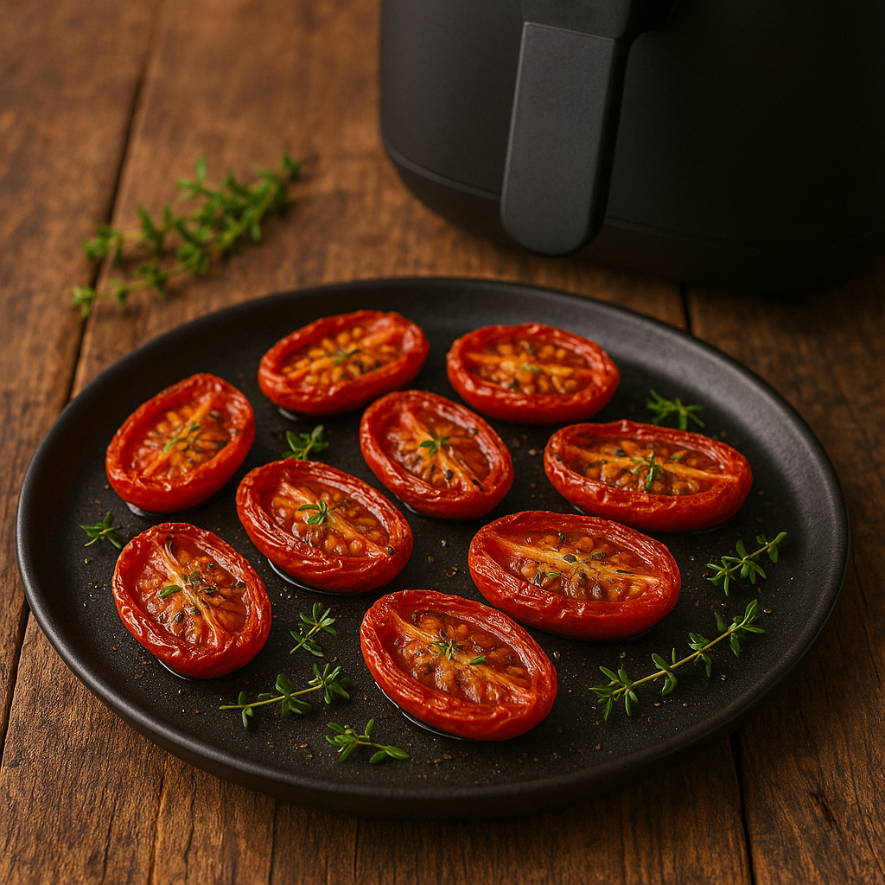

Populære temaer


Julefrokost


NY
Flæskesteg i airfryer
Flæskesteg i airfryer er en sand klassiker – perfekt sprød svær og saftig steg. Den er skabt til julefrokosten, men fungerer lige så godt som hverdagssteg.
Se opskrift →Airfryer klassikere
Airfryer klassikere


NY
Soltørrede tomater i airfryer
Soltørrede tomater i airfryer giver intens smag, sødme og perfekt konsistens – på en brøkdel af tiden sammenlignet med ovn eller traditionel tørring. De bliver dybt aromatiske, let seje og fantastiske i salater, sandwiches og pastaretter – eller bare som snack.
Se opskrift →

Anbefalet airfryer-udstyr
Annonce i samarbejde med PriceRunner